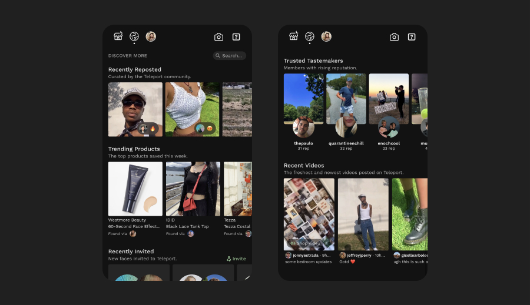
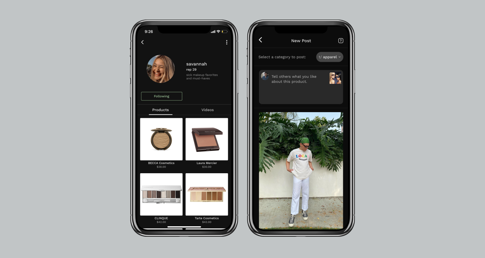

Summer internship at Teleport channeling curation and short video for community, authenticity, and creativity.
Teleport (at the time) was a short video app where creators could feature and sell products they owned, evolving into a platform that could let anyone set up their own curated store.
The following screens are a collection of things we've shipped out in the past months that I took a core part in designing with our CEO, product designer, and two engineers.
 
Discover
Moving away from the single-reel while we're still building community, users now find content through "discover" and "discussion" pages—also shaping more meaningful conversations around products rather than observation solely centered on awe.

Post Analytics
I identified need for and designed our post analytics (MVP deployed on app on right) to give tastemakers sense of how well other userse were receiving and interacting with their content.
Product
Being a very small team, I explored a lot on product: creating specs, conducting research and advocating for decisions from my lens as a designer, aligning the cross-functonal team.
I loved writing documentation and details on Notion, crafting diagrams and whiteboarding with people over Figma, surveying our backlog and moving into high-impact areas while still shipping insanely fast.
Insights
Creation, community, creator empowerment
I was drawn to Teleport because of the prospect of empowering creators. The economy of the future is rooted in creation and community: things I got to see first-hand while working with the startup.